streamsets对接FusionInsight¶
适用场景¶
Streamsets 3.16.1 ↔ FusionInsight HD 6.5 (HDFS/Hive/HBase/Kafka)
安装streamsets¶
环境：172.16.2.121
操作场景¶
安装streamsets 3.16.1
前提条件¶
- 已完成FusionInsight HD和客户端的安装。
操作步骤¶
- 登陆streamsets官网下载安装包 https://streamsets.com/products/dataops-platform/data-collector/download/#download-sdc

-
将下载好的安装包放到
/opt/streamsets路径下，使用命令tar -xvf streamsets-datacollector-all-3.16.1.tgz解压安装包
配置$SDC_DIST/libexec/sdc-env.sh文件

比如配置/opt/streamsets/streamsets-datacollector-3.16.1/libexec/sdc-env.sh文件

并且将/opt/streamsets/streamsets-datacollector-3.16.1/etc路径下的所有配置文件拷贝到/opt/streamsets/sdc/conf路径下
cp /opt/streamsets/streamsets-datacollector-3.16.1/etc/* /opt/streamsets/sdc/conf/
注意：需提前创建好对应的路径，再配置
- 使用如下命令启动streamsets
ulimit -n 32768 bin/streamsets dc
- 登陆streamsets的web ui进行登陆，比如
http://172.16.2.121:18630/
注意：第一次登陆需要使用工作邮箱在streamsets官网注册，获取激活码，完成后使用默认用户admin, 默认密码admin进行登陆
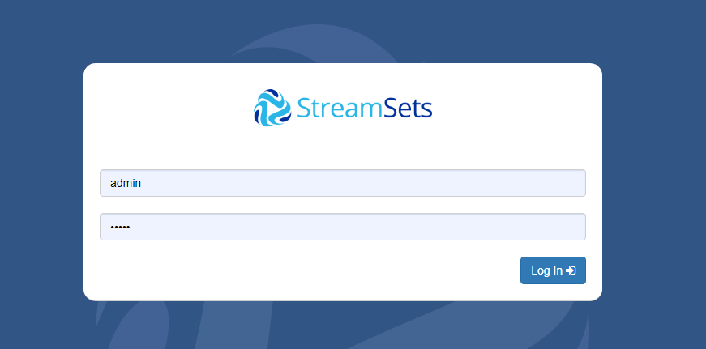
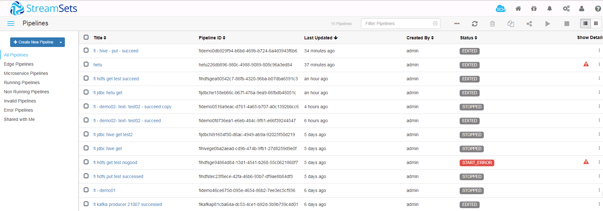
Kerberos认证相关配置¶
操作场景¶
配置streamsets与FI HD集群对接相关认证配置
前提条件¶
完成streamsets安装
操作步骤¶
说明：FI交互组件为Kafka, Hive, HDFS，配置时需要在streamsets选择相近的版本，下表为相近版本对应列表，根据此表找到streamsets对应版本依赖库路径，方便修改相关的jar包
| 组件 | 对应streamsets版本 |
|---|---|
| HDFS | HDP 3.1.0 |
| Hive | HDP 3.1.0 |
| HBase | CDH 5.14.0 |
| Kafka | Apache Kafka 1.1.0 |
配置步骤：
-
从FI Manager下载对应用户的认证文件user.keytab,krb5.conf并上传到streamsets主机的/opt路径下. 并且将krb5.conf文件放置到streamsets主机的/etc路径下，streamsets默认读取/etc/krb5.conf文件做认证服务
-
修改
$SDC_CONF/sdc.properties配置文件，比如/opt/streamsets/sdc/conf/sdc.properties

其中第2条和第3条为Kerberos认证用户以及user.keytab文件，从FI Manager上获取，并保证developuser有kafka,hdfs,hive相关权限
- 使用如下命令在FI HD客户端中获取
hadoop-plugins-1.0.jar并拷贝到/opt/streamsets/streamsets-datacollector-3.16.1/streamsets-libs/streamsets-datacollector-hdp_3_1-lib/lib路径下
cp /opt/125_651hdclient/hadoopclient/HDFS/hadoop/share/hadoop/common/lib/hadoop-plugins-1.0.jar /opt/streamsets/streamsets-datacollector-3.16.1/streamsets-libs/streamsets-datacollector-hdp_3_1-lib/lib
- 使用如下命令在FI HD客户端中获取
zookeeper-3.5.1.jar拷贝到/opt/streamsets/streamsets-datacollector-3.16.1/streamsets-libs/streamsets-datacollector-hdp_3_1-lib/lib路径下，并且把原来的zookeeper-3.4.10.jar注释掉
mv /opt/streamsets/streamsets-datacollector-3.16.1/streamsets-libs/streamsets-datacollector-hdp_3_1-lib/lib/zookeeper-3.4.10.jar /opt/streamsets/streamsets-datacollector-3.16.1/streamsets-libs/streamsets-datacollector-hdp_3_1-lib/lib/zookeeper-3.4.10.jar.org cp /opt/125_651hdclient/hadoopclient/Hive/Beeline/lib/jdbc/zookeeper-3.5.1.jar /opt/streamsets/streamsets-datacollector-3.16.1/streamsets-libs/streamsets-datacollector-hdp_3_1-lib/lib/
完成后检查：
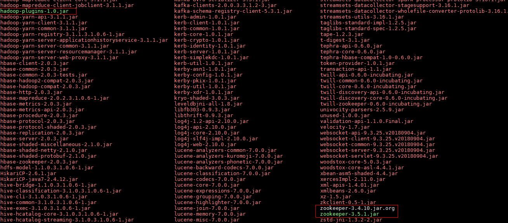
- 找到streamsets启动jvm参数配置文件
/opt/streamsets/streamsets-datacollector-3.16.1/libexec/sdc-env.sh做如下修改并保存：

增加参数内容为-Djava.security.auth.login.config=/opt/jaas.conf -Dzookeeper.server.principal=zookeeper/hadoop.hadoop.com -Dsun.security.krb5.debug=false -Dkerberos.domain.name=hadoop.hadoop.com -Djava.security.krb5.conf=/etc/krb5.conf
- 在/opt路径下创建jaas.conf文件，内容如下：

Client {
com.sun.security.auth.module.Krb5LoginModule required
useKeyTab=true
keyTab="/opt/user.keytab"
storeKey=true
useTicketCache=false
principal="developuser@HADOOP.COM";
};
KafkaClient {
com.sun.security.auth.module.Krb5LoginModule required
useKeyTab=true
principal="developuser@HADOOP.COM"
keyTab="/opt/user.keytab"
useTicketCache=false
serviceName="kafka"
storeKey=true
debug=true;
};
- 使用如下命令在FI HD客户端中获取
kafka-clients-1.1.0.jar并拷贝到路径/opt/streamsets/streamsets-datacollector-3.16.1/streamsets-libs/streamsets-datacollector-apache-kafka_1_1-lib/lib路径下，并且把原来的kafka-clients-1.1.0.jar注释掉
mv /opt/streamsets/streamsets-datacollector-3.16.1/streamsets-libs/streamsets-datacollector-apache-kafka_1_1-lib/lib/kafka-clients-1.1.0.jar /opt/streamsets/streamsets-datacollector-3.16.1/streamsets-libs/streamsets-datacollector-apache-kafka_1_1-lib/lib/kafka-clients-1.1.0.jar.org cp /opt/125_651hdclient/hadoopclient/Kafka/kafka/libs/kafka-clients-1.1.0.jar /opt/streamsets/streamsets-datacollector-3.16.1/streamsets-libs/streamsets-datacollector-apache-kafka_1_1-lib/lib/

- 使用如下命令在FI HD客户端中获取
zookeeper-3.5.1.jar拷贝到/opt/streamsets/streamsets-datacollector-3.16.1/streamsets-libs/streamsets-datacollector-apache-kafka_1_1-lib/lib路径下，并且把原来的zookeeper-3.4.6.jar注释掉
mv /opt/streamsets/streamsets-datacollector-3.16.1/streamsets-libs/streamsets-datacollector-apache-kafka_1_1-lib/lib/zookeeper-3.4.6.jar /opt/streamsets/streamsets-datacollector-3.16.1/streamsets-libs/streamsets-datacollector-apache-kafka_1_1-lib/lib/zookeeper-3.4.6.jar.org cp /opt/125_651hdclient/hadoopclient/Kafka/kafka/libs/zookeeper-3.5.1.jar /opt/streamsets/streamsets-datacollector-3.16.1/streamsets-libs/streamsets-datacollector-apache-kafka_1_1-lib/lib/
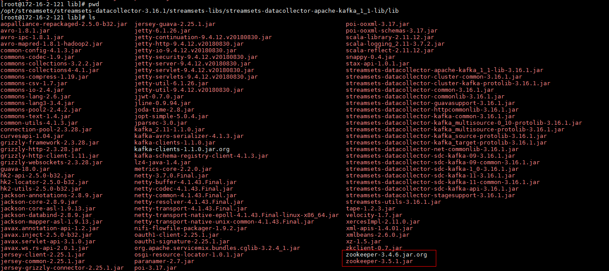
- 使用如下命令在FI HD客户端中获取
zookeeper-3.5.1.jar拷贝到/opt/streamsets/streamsets-datacollector-3.16.1/streamsets-libs/streamsets-datacollector-cdh_5_14-lib/lib路径下，并且把原来的zookeeper-3.4.5-cdh5.14.0.jar注释掉
mv /opt/streamsets/streamsets-datacollector-3.16.1/streamsets-libs/streamsets-datacollector-cdh_5_14-lib/lib/zookeeper-3.4.5-cdh5.14.0.jar /opt/streamsets/streamsets-datacollector-3.16.1/streamsets-libs/streamsets-datacollector-cdh_5_14-lib/lib/zookeeper-3.4.5-cdh5.14.0.jar.org cp /opt/125_651hdclient/hadoopclient/Hive/Beeline/lib/jdbc/zookeeper-3.5.1.jar /opt/streamsets/streamsets-datacollector-3.16.1/streamsets-libs/streamsets-datacollector-cdh_5_14-lib/lib
-
创建路径
/opt/streamsets/hdfsconf，在FI HD客户端中获取core-site.xml, hdfs-site.xml, hive-site.xml, hbase-site.xml拷贝到该路径下，并且做如下修改 -
core-site.xml配置文件修改：
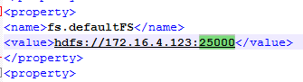
其中172.16.4.123为hdfs主namenode的ip,端口为25000
-
hdfs-site.xml配置文件修改：
找到如下配置项，并且删除
<property> <name>dfs.client.failover.proxy.provider.hacluster</name> <value>org.apache.hadoop.hdfs.server.namenode.ha.AdaptiveFailoverProxyProvider</value> </property>
完成后重启streamsets
对接HDFS¶
操作场景¶
配置streamsets对接HDFS，读、写数据
前提条件¶
完成streamsets安装，完成Kerberos认证相关配置
读取HDFS数据用例¶
- 新建一个数据流任务

- 整个数据流如下：
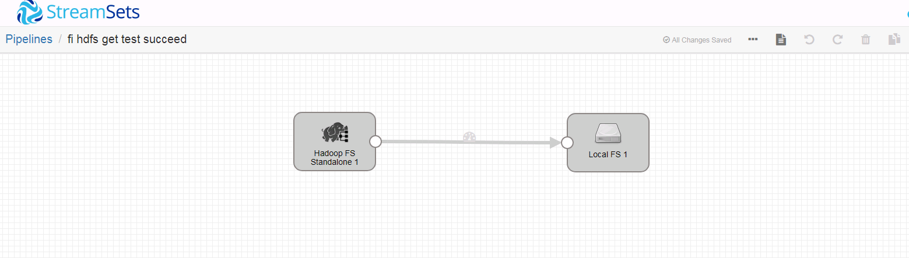
注意（重要）：经过测试，数据源端选择Hadoop FS Standalone. 如果数据源端选择Hadoop FS会遇到问题
- 在空白处单击鼠标左键，在General页签配置数据流执行模式为Standalone
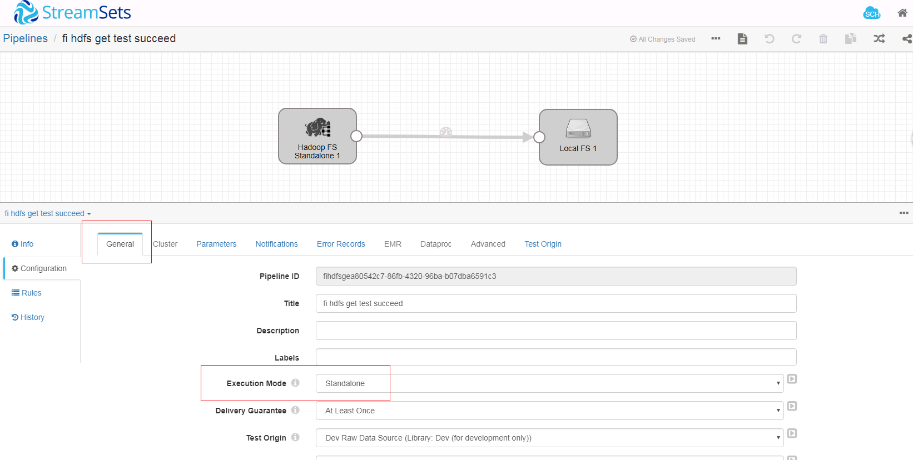
-
Hadoop FS Standalone 配置如下：
-
General页签
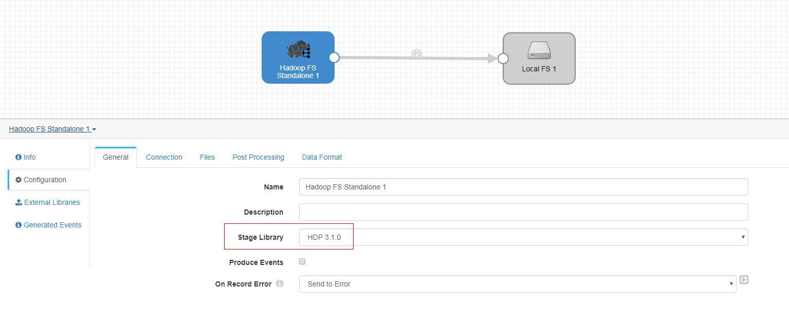
-
Connection页签
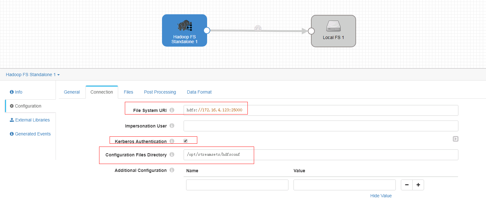
注意：其中172.16.4.123为hdfs主namenode节点的ip
-
Files页签
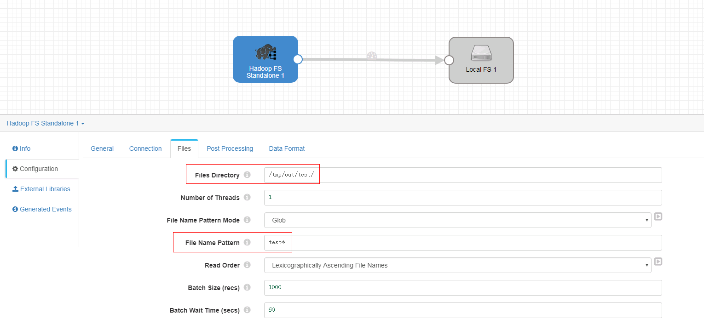
-
Post processing页签未做修改

-
Data Format页签
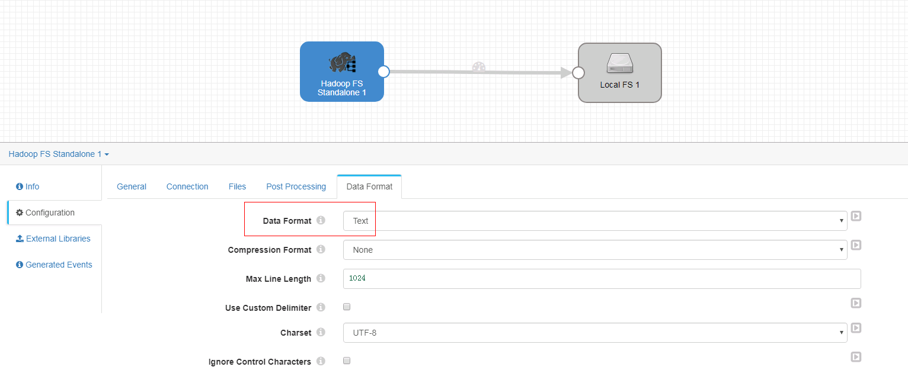
-
Local FS 配置如下：
-
只修改Output Files页签

-
启动任务前，登陆集群hdfs路径
/tmp/out/test/,并创建数据文件test.txt

- 启动任务流

注意：多次启动如果数据没有结果跟新，使用如下的启动方式

- 登陆后台对应路径检查结果：
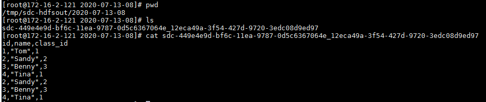
写入HDFS数据用例¶
- 新建一个数据流任务
- 整个数据流如下：

- 在空白处单击鼠标左键，在General页签配置数据流执行模式为Standalone

-
Directory 配置
-
General页签

-
Files页签

-
Post Processing页签未做修改

-
Data Format页签

-
Hadoop FS 配置
- General页签

- Connection页签

注意：其中172.16.4.123为hdfs主namenode节点的ip
- Output Files页签

- Late Records页签

- Data Format页签
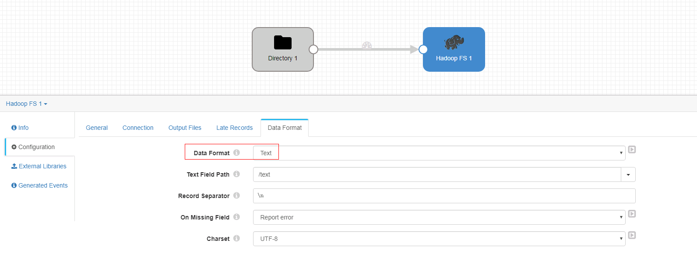
-
测试前登陆主机后台准备上传数据文件：
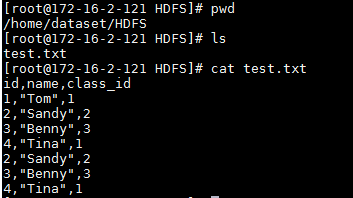
- 启动数据流
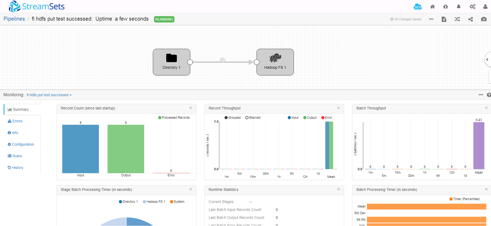
- 登陆hdfs对应路径查看结果
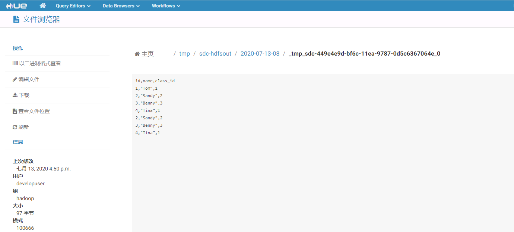
对接Hive¶
操作场景¶
配置streamsets对接Hive，写入数据
说明：streamsets不提供hive作为直接数据源，本节只提供hive写入用例
前提条件¶
完成streamsets安装，完成Kerberos认证相关配置
写入Hive数据用例¶
- 新建一个数据流任务
- 整个数据流如下：

-
Dev Raw Data Source 配置
-
General页签

-
Raw Data页签
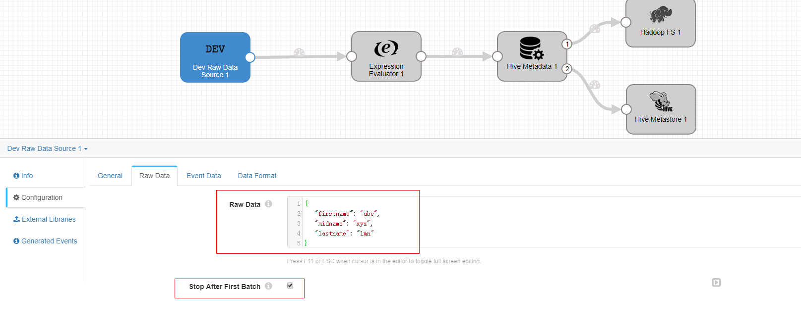
{ "firstname": "abc", "midname": "xyz", "lastname": "lmn" } -
Event Data页签,未做配置
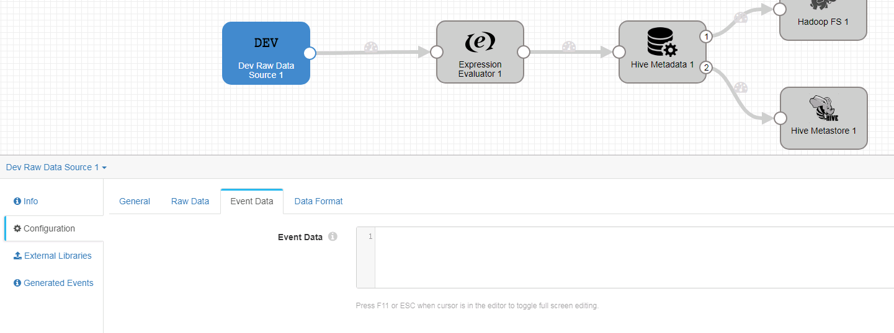
-
Data Format页签

-
Expression Evaluator 配置
-
General页签
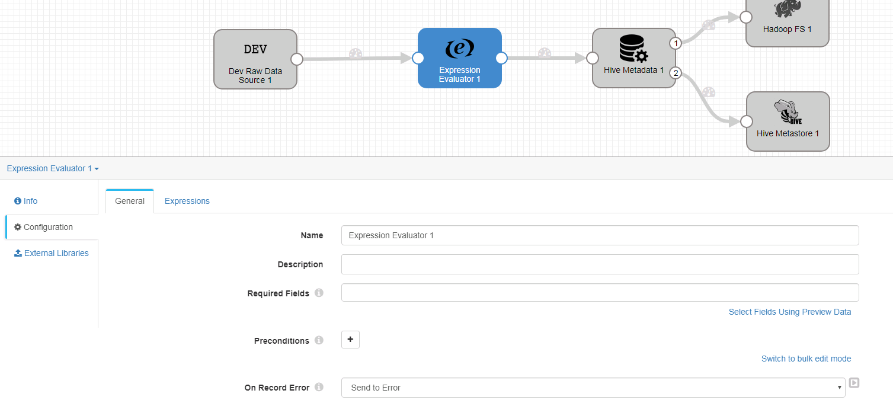
-
Expressions页签

database = default table_name = sdc_drift_example
-
Hive Metadata 配置
-
General页签配置：
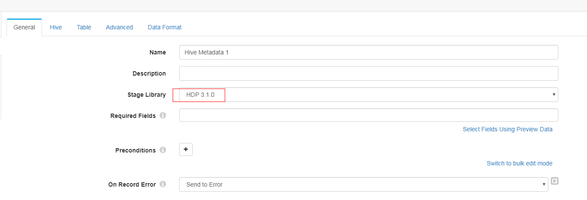
-
Hive页签配置：

1. jdbc:hive2://172.16.4.121:24002,172.16.4.122:24002,172.16.4.123:24002/default;serviceDiscoveryMode=zooKeeper;zooKeeperNamespace=hiveserver2;sasl.qop=auth-conf;auth=KERBEROS;principal=hive/hadoop.hadoop.com@HADOOP.COM 2. org.apache.hive.jdbc.HiveDriver 3. /opt/streamsets/hdfsconf
-
Table页签配置
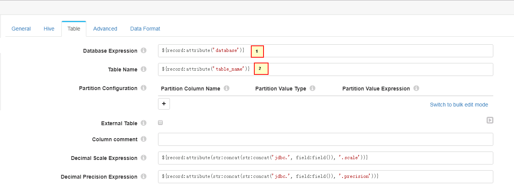
1. ${record:attribute('database')} 2. ${record:attribute('table_name')} -
Advanced页签按默认配置，未做修改

-
Data Format页签配置

-
Hadoop FS 配置
-
General页签配置

-
Connection页签配置
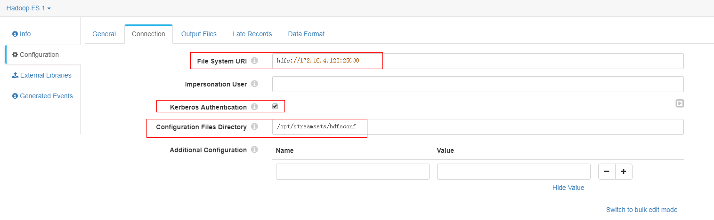
-
Output Files页签配置
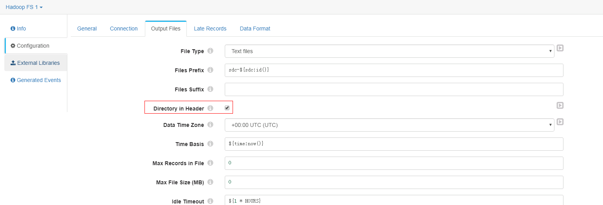
-
Late Records页签配置

-
Data Format页签配置
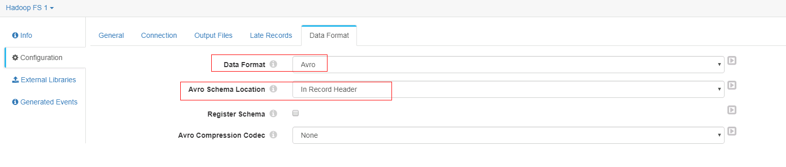
-
Hive Metastore 配置
-
General页签配置

-
Hive页签配置

1. jdbc:hive2://172.16.4.121:24002,172.16.4.122:24002,172.16.4.123:24002/;serviceDiscoveryMode=zooKeeper;zooKeeperNamespace=hiveserver2;sasl.qop=auth-conf;auth=KERBEROS;principal=hive/hadoop.hadoop.com@HADOOP.COM 2. org.apache.hive.jdbc.HiveDriver 3. /opt/streamsets/hdfsconf
-
Advanced页签配置
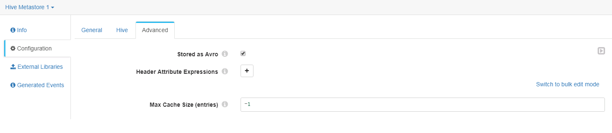
-
hive表streamsets会自动创建，不需要提前创建改表
-
启动数据流
-
beeline登陆Hive检查结果

对接HBase¶
操作场景¶
配置streamsets对接HBase
注意：streamstes不提供HBase作为源端的功能，本节只提供HBase写入用例
前提条件¶
完成streamsets安装，完成Kerberos认证相关配置
HBase相关配置¶
说明： FusionInisight 的HBase版本（1.3.1）与CDH 5.14.0 的HBase版本（1.2.0）相近, 已经修改了zookeeper-3.4.5-cdh5.14.0.jar 为FusionInsight的 zookeeper-3.5.1.jar. 但是版本还是有差异，需要导入Fusioninsight hbase相关jar包，避免发生依赖错误
参考如下链接安装外部依赖库,并导入FusionInsgiht HBase依赖： https://streamsets.com/documentation/datacollector/latest/help/datacollector/UserGuide/Configuration/ExternalLibs.html#concept_amy_pzs_gz


- 首先创建路径
/opt/streamsets/sdc/sdc-extras/streamsets-datacollector-cdh_5_14-lib/lib
mkdir -p /opt/streamsets/sdc/sdc-extras/streamsets-datacollector-cdh_5_14-lib/lib
- 将FusionInsight HBase相关依赖jar包拷贝到上一步创建的路径中
cp /opt/125_651hdclient/hadoopclient/HBase/hbase/lib/*.jar /opt/streamsets/sdc/sdc-extras/streamsets-datacollector-cdh_5_14-lib/lib
- 修改配置文件
$SDC_CONF/sdc-security.policy，比如/opt/streamsets/sdc/conf/sdc-security.policy,增加如下内容：
// user-defined external directory
grant codebase "file:///opt/streamsets/sdc/sdc-extras/-" {
permission java.security.AllPermission;
};
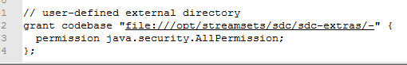
- (重要)关闭正在运行的streamsets, 先申明之前配置的环境变量
STREAMSETS_LIBRARIES_EXTRA_DIR,再启动streamsets. 比如：
export STREAMSETS_LIBRARIES_EXTRA_DIR="/opt/streamsets/sdc/sdc-extras" bin/streamsets dc
- 登陆streamsets的web界面，在**Package Manager**处的**External Libraries**检查相关依赖是否导入成功

写入HBase数据用例¶
- 新建一个数据流任务
- 整个数据流如下：

-
Dev Raw Data Source 1 配置
-
General页签
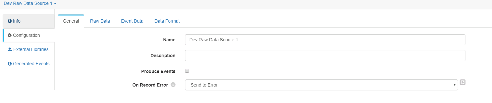
-
Raw Data页签

{ "firstname": "abc", "midname": "xyz","lastname": "lmn" } -
Event Data页签未作修改
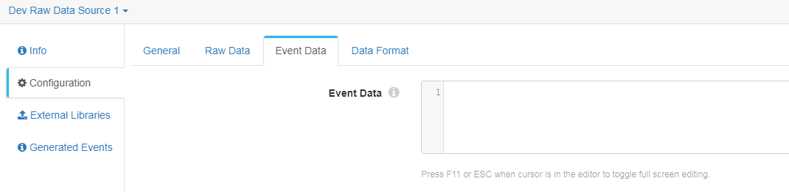
-
Data Format页签

-
HBase 配置
-
General页签

-
HBase页签
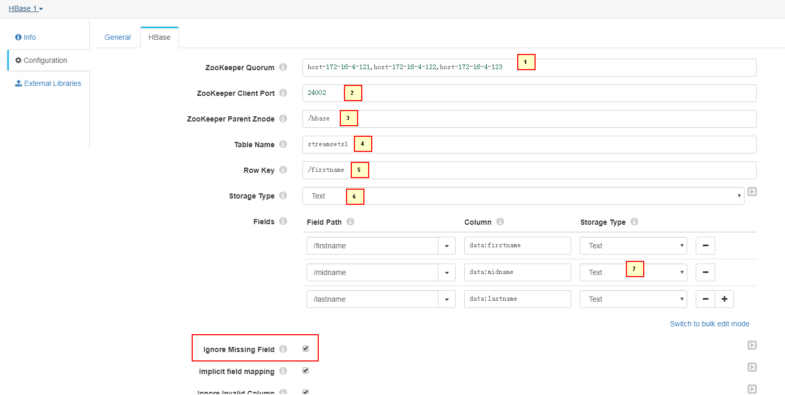
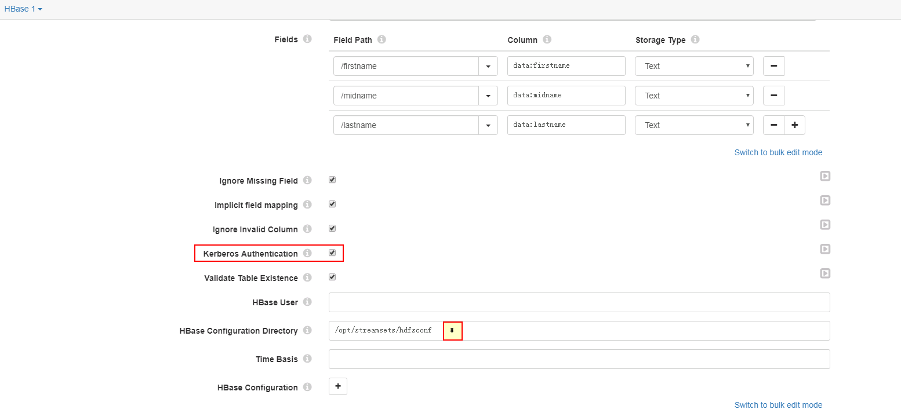
1. host-172-16-4-121,host-172-16-4-122,host-172-16-4-123 2. 24002 3. /hbase 4. streamsets1 5. /firstname 6. Text 7. /firstname - data:firstname - Text /midname - data:midname - Text /lastname - data:lastname - Text 8. /opt/streamsets/hdfsconf
-
测试前登陆hbase客户端，创建表streamsets1
hbase shell create 'streamsets1','data'
- 启动数据流
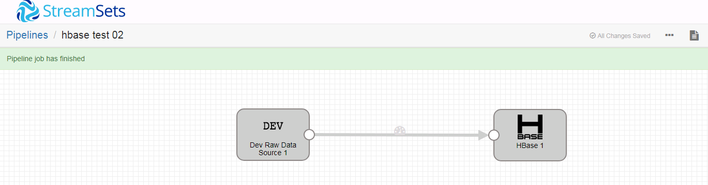
- hbase客户端检查结果
scan 'streamsets1'

对接Kafka安全模式¶
操作场景¶
配置streamsets对接Kafka，生产，消费数据
前提条件¶
完成streamsets安装，完成Kerberos认证相关配置
写入Kafka数据用例¶
- 新建一个数据流任务
- 整个数据流如下：

-
Directory 配置：
-
General页签
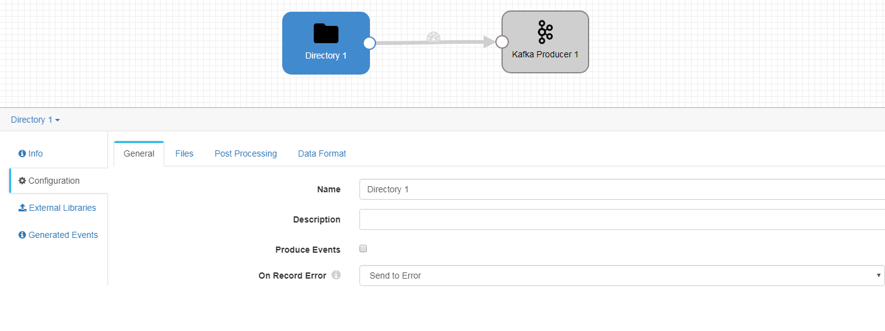
-
Files页签
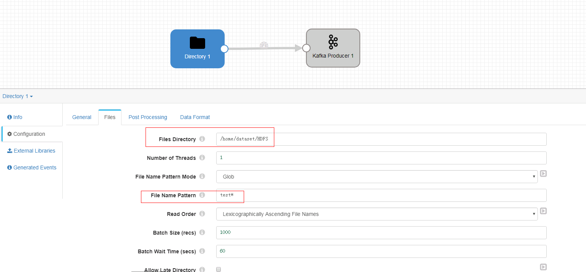
-
Post Processing页签未做修改
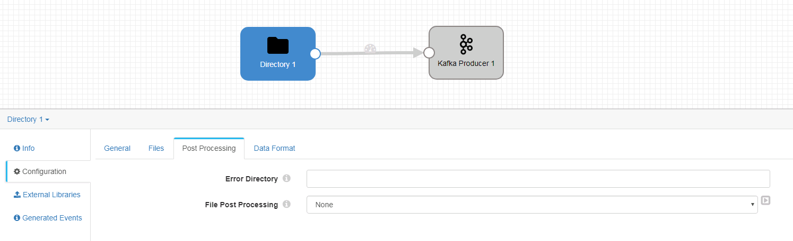
-
Data Format页签
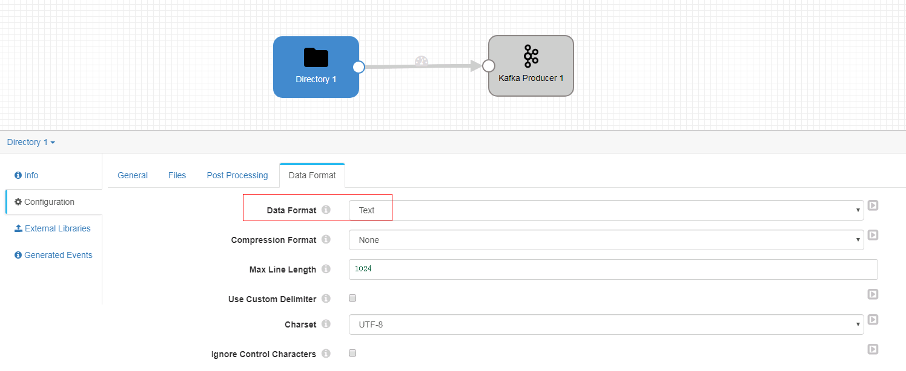
-
Kafka Producer 配置：
-
General页签

-
Kafka页签

1. 172.16.4.121:21007 2. streamtests21007 3. security.protocol = SASL_PLAINTEXT 4. sasl.kerberos.service.name = kafka
-
Data Format页签

-
Response页签
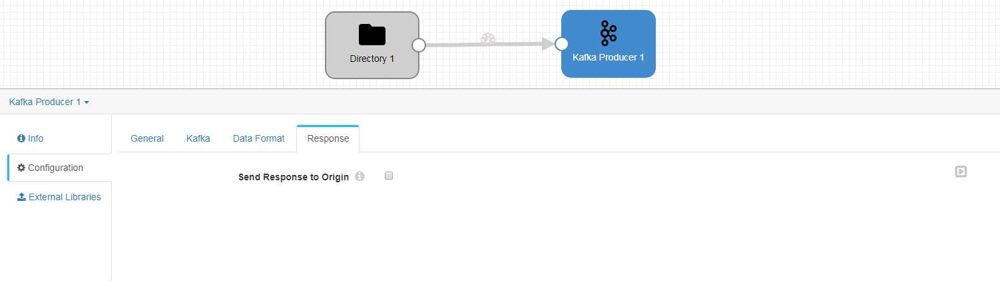
-
启动数据流前，使用命令
bin/kafka-topics.sh --create --zookeeper 172.16.4.121:24002,172.16.4.122:24002,172.16.4.123:24002/kafka --partitions 2 --replication-factor 2 --topic streamtests21007创建topic -
使用如下命令启动kafka消费者
bin/kafka-console-consumer.sh --zookeeper 172.16.4.121:24002,172.16.4.122:24002,172.16.4.123:24002/kafka --topic streamtests21007
- 启动任务流

对已启动过的任务，用如下方式重新启动

- 在kafka消费者检查结果
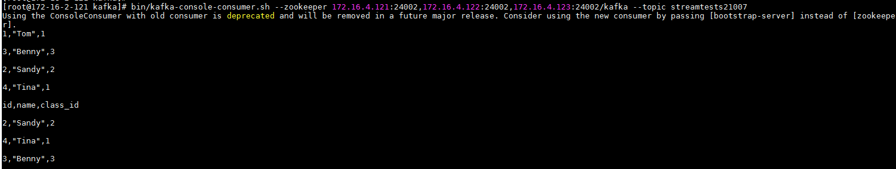
读取Kafka数据用例¶
- 新建一个数据流任务
- 整个数据流如下：

注意（重要）：经过测试，数据源端选择Kafka Multitopic Consumer. 如果数据源端选择Kafka Consumer会遇到问题
-
Kafka Multitopic Consumer 配置：
-
General页签
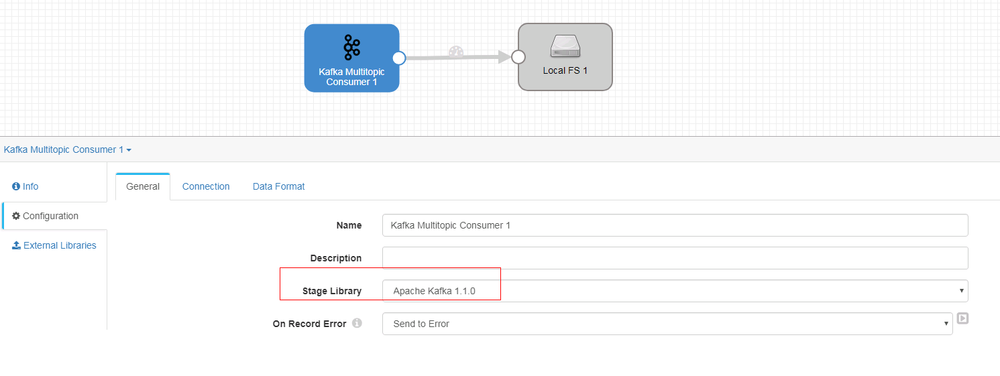
-
Connection页签
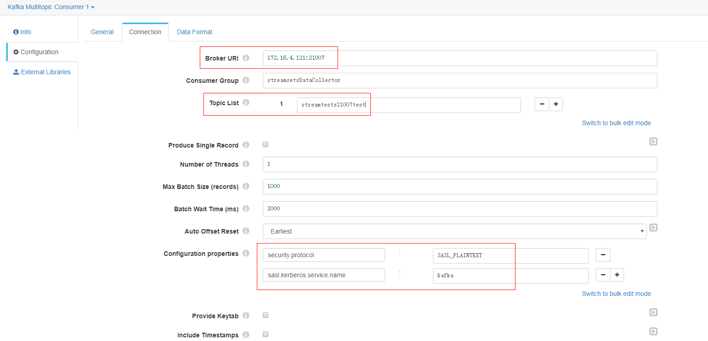
-
Data Format页签

-
Local FS 配置
-
General页签
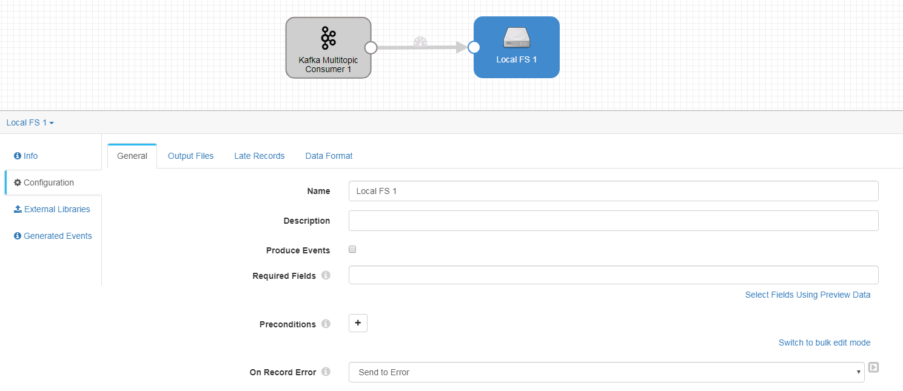
-
Output Files页签
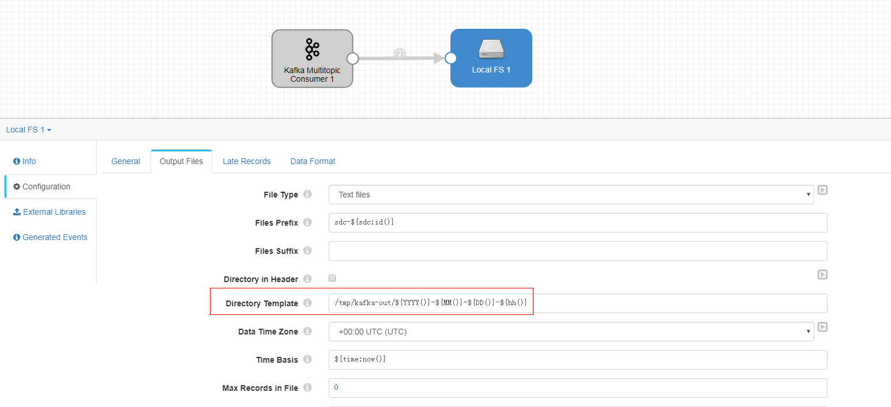
-
Late Records页签

-
Data Format页签

-
启动数据流前，使用命令
bin/kafka-topics.sh --create --zookeeper 172.16.4.121:24002,172.16.4.122:24002,172.16.4.123:24002/kafka --partitions 2 --replication-factor 2 --topic streamtests21007test创建topic -
首先使用
bin/kafka-console-producer.sh --broker-list 172.16.4.121:21007,172.16.4.122:21007,172.16.4.123:21007 --topic streamtests21007test --producer.config config/producer.properties启动kafka生产者 -
启动数据流，手动在前一步生产者中插入数据
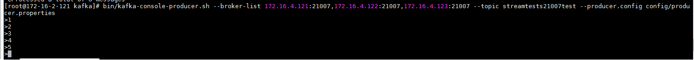

- 登陆后台对应路径检查结果：

streamsets最佳实践¶
操作场景¶
配置streamsets ETL数据流，从FI kafka读取数据，再写入FI Hive中
前提条件¶
完成streamsets安装，完成Kerberos认证相关配置，完成HDFS, Hive, Kafka用例测试
测试用例¶
新建一个数据流任务
整个数据流如下：
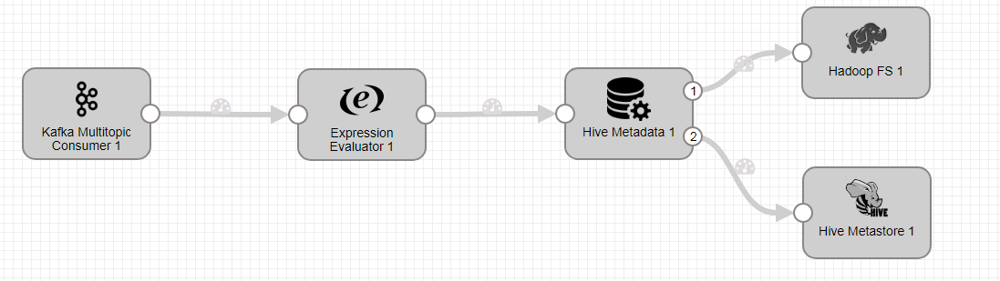
Kafka Multitopic Consumer 配置
- General页签配置：
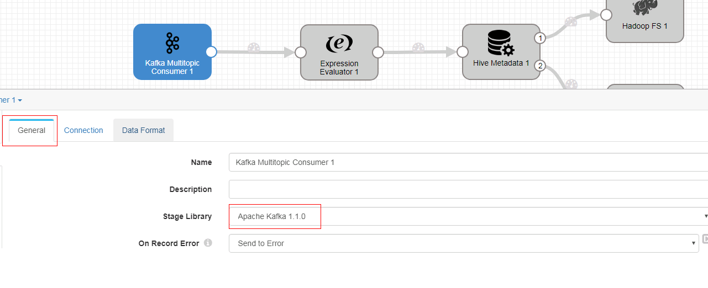
- Connection页签配置：

1. 172.16.4.121:21007 2. demo01json21007 3. security.protocol = SASL_PLAINTEXT 4. sasl.kerberos.service.name = kafka
- Data Format页签配置

Expression Evaluator 配置
- General页签按默认配置，未做修改

- Expressions页签配置：

1. database = default 2. table_name = sdc_drift_example03
Hive Metadata 配置 - General页签配置：
- Hive页签配置：
1. jdbc:hive2://172.16.4.121:24002,172.16.4.122:24002,172.16.4.123:24002/default;serviceDiscoveryMode=zooKeeper;zooKeeperNamespace=hiveserver2;sasl.qop=auth-conf;auth=KERBEROS;principal=hive/hadoop.hadoop.com@HADOOP.COM 2. org.apache.hive.jdbc.HiveDriver 3. /opt/streamsets/hdfsconf
- Table页签配置
1. ${record:attribute('database')}
2. ${record:attribute('table_name')}
- Advanced页签按默认配置，未做修改
- Data Format页签配置
Hadoop FS 配置
- General页签配置
- Connection页签配置
- Output Files页签配置
- Late Records页签配置
- Data Format页签配置
Hive Metastore 配置
- General页签配置
- Hive页签配置
1. jdbc:hive2://172.16.4.121:24002,172.16.4.122:24002,172.16.4.123:24002/;serviceDiscoveryMode=zooKeeper;zooKeeperNamespace=hiveserver2;sasl.qop=auth-conf;auth=KERBEROS;principal=hive/hadoop.hadoop.com@HADOOP.COM 2. org.apache.hive.jdbc.HiveDriver 3. /opt/streamsets/hdfsconf
- Advanced页签配置
测试前准备
- 使用FI HD客户端创建kafka相关topic demo01json21007
bin/kafka-topics.sh --create --zookeeper 172.16.4.121:24002,172.16.4.122:24002,172.16.4.123:24002/kafka --partitions 2 --replication-factor 2 --topic demo01json21007
-
hive表streamsets会自动创建，不需要提前创建改表
-
启动streamsets数据流
-
使用如下命令启动kafka producer并且插入数据
bin/kafka-console-producer.sh --broker-list 172.16.4.121:21007,172.16.4.122:21007,172.16.4.123:21007 --topic demo01json21007 --producer.config config/producer.properties
数据：
{ "firstname": "abc", "midname": "xyz","lastname": "lmn" }
{ "firstname": "abc1", "midname": "xyz1","lastname": "lmn1" }
{ "firstname": "abc2", "midname": "xyz2","lastname": "lmn2" }

- 检查streamsets界面
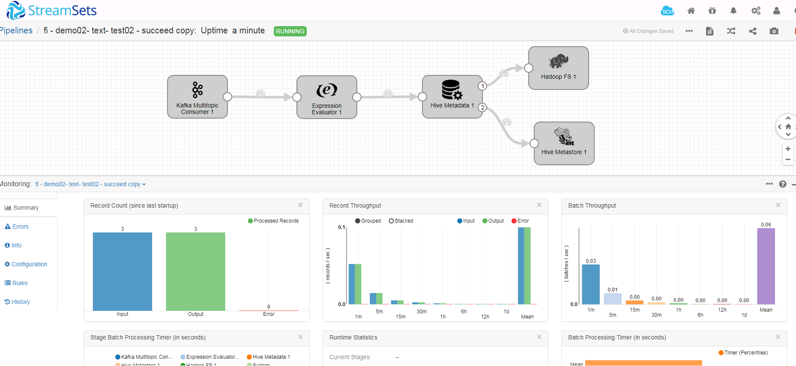
- 后台检查hive表

FAQ¶
问题1
在做hive写入相关用例的时候（hive表写入用例，最佳实践用例），如果预先在hive表中建对应的表，发现工作流启动之后数据不能写入到hive表中，但是也没有报错
解决办法：
不要预先在hive中预先建表，由streamset自动建对应hive表，可以实现数据写入成功
问题2
在启动数据流之后，使用kafka producer插入数据时，streamsets报错

Reason:Error while compiling statement: FAILED: HiveAccessControlException Permission denied: Principal [name=developuser, type=USER] does not have following privileges for operation CREATETABLE [[OBJECT OWNERSHIP] on Object [type=DFS_URI, name=hdfs://hacluster/user/hive/warehouse/sdc_drift_example03]]
问题原因：streamsets会使用developuser创建表sdc_drift_example03，期间要在hdfs下创建对应路径，当前用户拥有的角色不具备操作HDFS权限。
解决办法：在OM管理界面System下Role Management中给对应的角色赋予相应的HDFS操作权限。
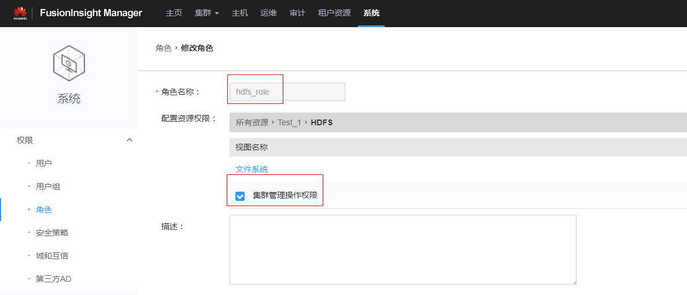
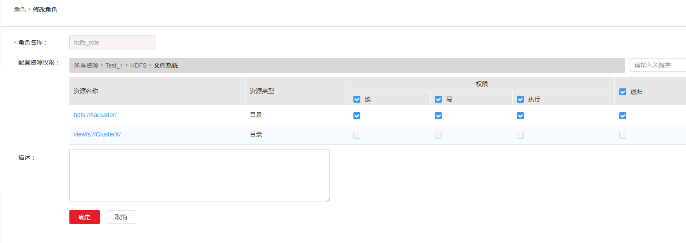
注意：如果该角色已经配置，重启streamsets即可